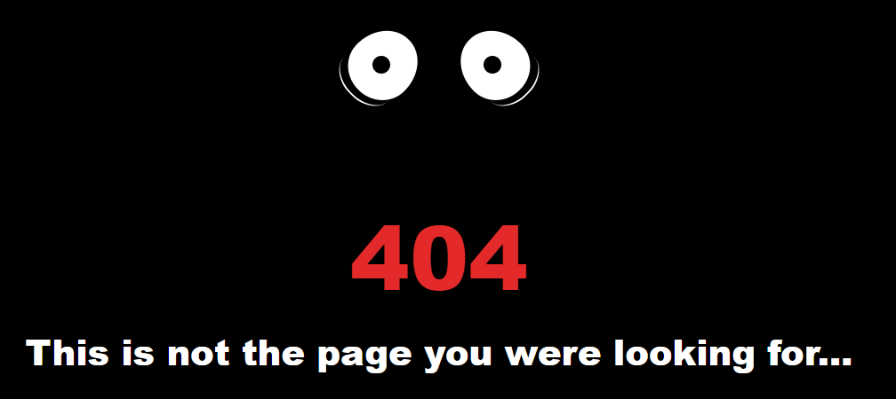
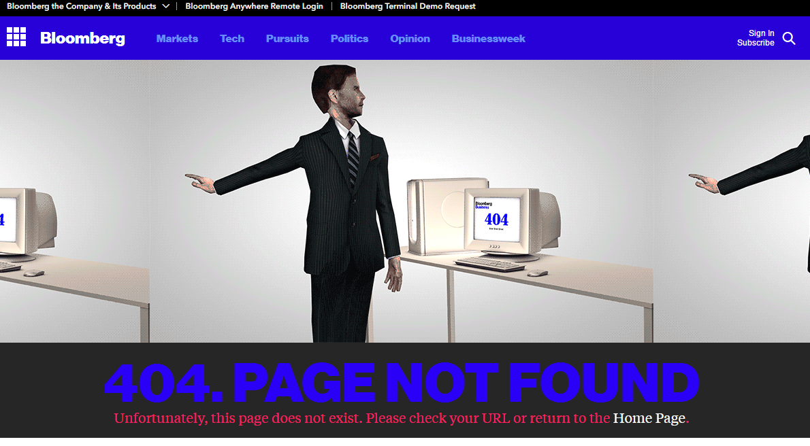

Funny 404 Pages
Singularity hub

Bloomberg

Hope you found the assortment of 404 pages amusing. If you are the owner and you feel violated, and don't want me to post them here, send me a cease and desease note and i will happy bend over for you.